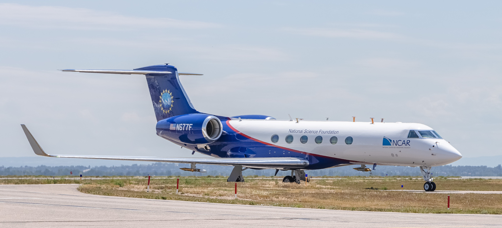

Welcome to the RAF flight data visualizer.
Explore over 20 years of research flight data from the NSF NCAR Research Aviation Facility (RAF). This tool lets you visualize time-series variables, flight tracks on an interactive map, and synchronized aircraft camera imagery, all in one place.
During active campaigns, real-time data is streamed on the Real-Time page.


- Select a Project & Flight: Use the dropdowns to choose a research project, then pick a flight to load its data.
- Add Variables: Search or filter by category in the variables list, then add variables to up to 8 chart panels.
- Explore the Map: View the flight track with optional weather overlays including radar, satellite, and lightning data.
- Play the Timeline: Use the timeline controls to play back the flight. Charts, map position, and camera video stay in sync.
- Share Your View: Click the share button to copy a URL that preserves your selected project, flight, variables, and zoom state.
The data shown here comes from the EOL Field Data Archive. Learn more about RAF research projects on the EOL Homepage. To download raw data, visit the Dashboard and follow the Data Access link in the Project Table.
Email rafsehelp@ucar.edu, or submit an issue directly with our form below.